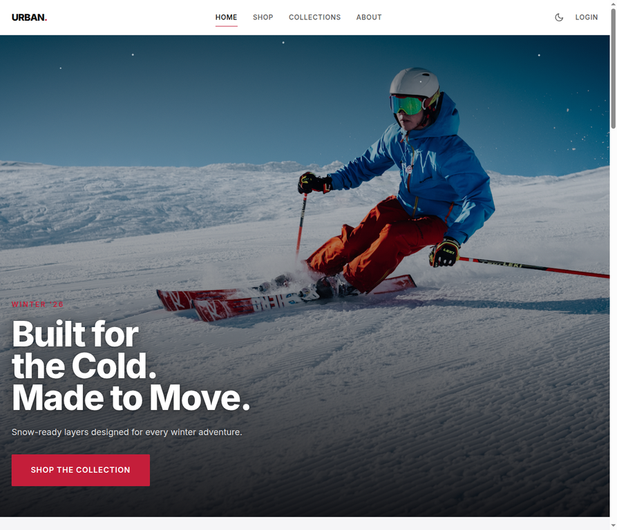
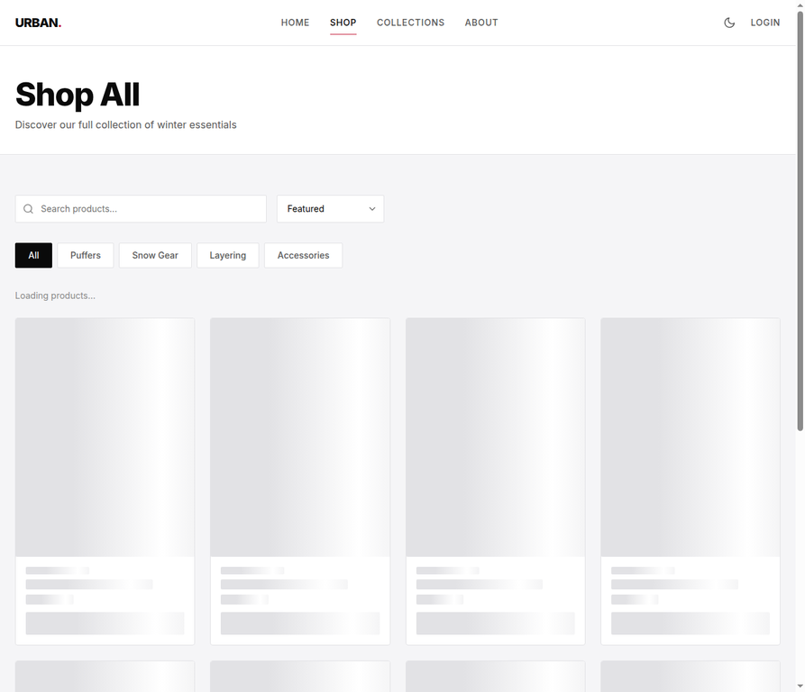

Case Study / 03
Urban Threads
A cinematic winter storefront that turns technical outerwear into a clear, confident shopping journey.


The Brief
Make winter feel ready.
Urban Threads is a premium winter streetwear concept for young athletes. The brief was to make the storefront feel cinematic without hiding the practical information shoppers need: product categories, discovery routes, and a clear reason to continue.
The design needed to balance technical performance with an urban voice that feels confident rather than over-polished.
My Approach
Lead with atmosphere, then remove friction.
I established a bold hero, then carried its typography and contrast into product categories and the shop view. Search, sorting, and category filters give the visual system a useful spine.
The work also treats responsive behavior as part of the art direction: the same cold-weather energy should survive on a small screen without turning the interface into a poster.
What I Learned
Story sells the next click.
A strong campaign frame can create desire, but the interface earns trust when it explains what happens next. In this build, every visual beat is paired with a route into the catalogue or the product story.
That principle transfers directly to portfolio work: use atmosphere to invite attention, then use structure to respect it.
Outcome
A storefront with a point of view.
Urban Threads now has a cohesive landing experience and a responsive discovery foundation that can grow into product details, cart, account, and collection storytelling.